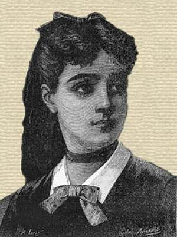
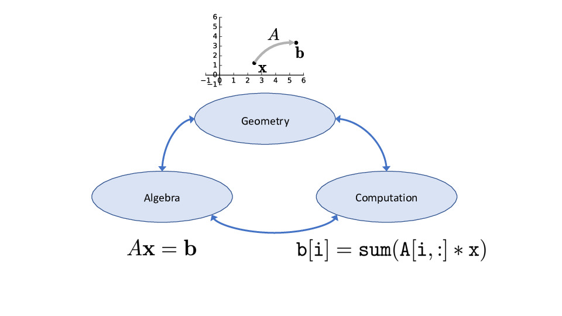

Algebra is but written geometry.
Sophie Germain
Preface
Welcome!
These are lecture notes for Computer Science 132, Geometric Algorithms, as taught by me at Boston University. The overall structure of the course is roughly based on Linear Algebra and its Applications, by David C. Lay, Addison-Wesley (Pearson). Many examples, illustrations, and explanations are based on that excellent text. However all the content has been significantly revised by me. The notes also include contributions and improvements from Wayne Snyder, as well as from students who have taken CS 132 (see the list of contributors here).
The Story
I have long embraced the belief that every course should be built around a story, a quest to answer certain burning questions.
David Bressoud, mathvalues.org
What is linear algebra really about? This is a great question. My attempt at an answer is this:
Our shared experience of the world is in three dimensions. In that context humans have acquired innate and learned abilities to think about shapes and spatial relationships. Linear algebra asks: how would all that change if the number of dimensions was unspecified?
In that view, an enormously important contribution comes from an algebra in which the dimensionality of objects is unspecified so that concepts become generalized. Another important contribution comes from taking familiar three-dimensional notions and asking what we can say about them, and how we can reason about them, in arbitrary dimension.
Teaching Approach
Five-dimensional shapes are hard to visualize – but it doesn’t mean you can’t think about them. Thinking is really the same as seeing.
William Thurston
The rationale for the teaching approach used in this course is here. In brief:
Students learning Linear Algebra need to develop three modes of thinking. The first is algebraic thinking – how to correctly manipulate symbols in a consistent logical framework, for example to solve equations. The second is geometric thinking: learning to extend familiar two- and three-dimensional concepts to higher dimensions in a rigorous way. The third is computational thinking: understanding the relationship between abstract algebraic machinery and actual computations which arrive at the (hopefully) correct answer to a specific problem in an efficient way.
It’s in words that the magic is — Abracadabra, Open Sesame, and the rest — but the magic words in one story aren’t magical in the next. The real magic is to understand which words work, and when, and for what; the trick is to learn the trick.
John Barth, Chimera
Each mode of thinking provides a distinct, powerful way of understanding a problem, and so using the full power of linear algebra requires being able to switch between these modes with fluidity. However, these three modes of thinking are quite different, and often students are better at some modes than others. For example, here are three views of matrix-vector multiplication:

Jupyter notebooks – including the use of RISE for presentation, Python for computation, and jupyter books for reference – are an ideal teaching environment to take on this trimodal challenge. Hence the goal of these notes is to take advantage of the Jupyter toolchain to interweave these modes on a fine grain, frequently moving from one mode to the other, to constantly reinforce connections between ways of thinking about linear algebra.
Format
The notes are in the form of Jupyter notebooks. Demos and most figures are included as executable Python code. All course materials are in the github repository here.
Each of the Chapters is based on a single notebook, and each forms the basis for one lecture (more or less).
I hope you enjoy this course, whose goal is to prevent you from falling into this trap:
Algebra is the offer made by the devil to the mathematician. The devil says: I will give you this powerful machine, it will answer any question you like. All you need to do is give me your soul: give up geometry and you will have this marvelous machine.
Sir Michael Atiyah, 2002
And to conclude, here is an anonymous course review from Fall 2022:
I thought when the Professors were talking about how linear algebra is “beautiful,” they were exaggerating, but by the end of the course, I understood why this is true.